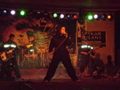

Rock-o-Phonix – The Rock Contest

The crowd is immense. You can almost touch the exuberance.
The lights go out. The air of anticipation akin to a knife-edge, poised
to slice through the night with a resounding roar.
Rock-o-phonix is here to cradle the nascent rock-bands that spurt from the
unending fountain that northeastern rock culture is. This where you where you have to prove yourself before you can walk the road to greatness.
It is little surprise, then, that the past winners of this battle
of the bands have gone on to achieve 'rock'ing success...
|